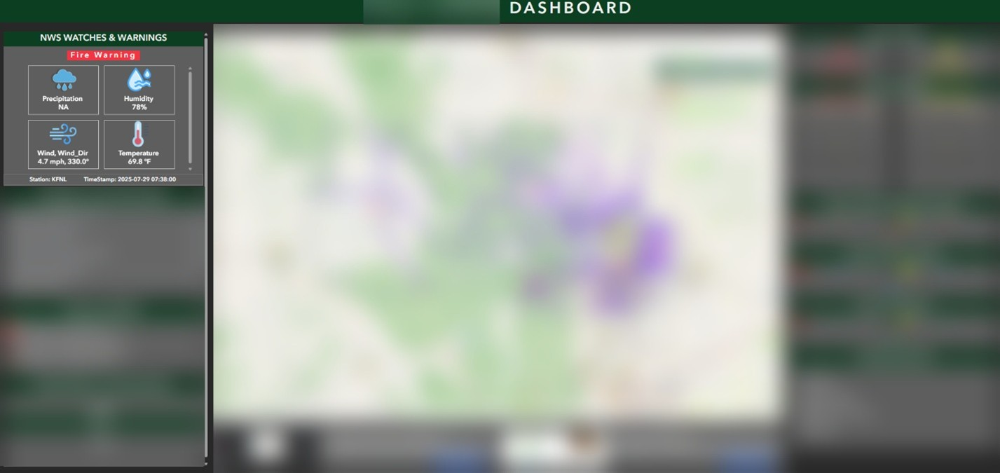

Problem
Our team was operating an ArcGIS Online (AGOL) dashboard designed to visualize critical data during emergency events like wildfires, floods, and other hazardous incidents. A key requirement was to display real-time weather information (temperature, wind, humidity, precipitation) directly on the map, specific to the incident location. This was essential for decision-makers and emergency responders when evaluating evacuation zones and public safety strategies. However, there was no built-in feature to retrieve and maintain current weather data on AGOL layers.
Solution
Developed a Python-based automation tool that:
- Retrieves live weather observations from the National Weather Service (NWS) based on latitude and longitude.
- Extracts key metrics such as temperature, humidity, precipitation, wind speed, and wind direction.
- Converts and formats values (e.g., Celsius to Fahrenheit, m/s to mph).
- Connects securely to the AGOL Feature Layer using ArcGIS API for Python.
- Updates the weather attributes on the relevant AGOL feature layer entries automatically every 30 minutes.
</> Snippet
def get_weather_from_nearest_station(lat, lon):
headers = {
"User-Agent": "weatherdata Fetch",
"Accept": "application/ld+json"
}
try:
# Step 1: Get the nearest station from NWS
point_url = f"https://api.weather.gov/points/{lat},{lon}"
point_resp = requests.get(point_url, timeout=10).json()
stations_url = point_resp['properties']['observationStations']
# Step 2: Get station list
stations_resp = requests.get(stations_url, headers=headers, timeout=10).json()
stations = stations_resp.get('observationStations')
if not stations:
raise ValueError("No observation stations found.")
nearest_station = stations[0]
file.write(f"Nearest station: {nearest_station}\n")

Weather Info

Main Dashboard
Impact
- Enabled real-time environmental awareness directly on AGOL dashboards.
- Replaced manual or outdated weather input methods with a live, reliable data pipeline.
- Scalable and reusable for other GIS projects or multiple incident zones.
- Improved operational efficiency and data accuracy during emergency response operations.